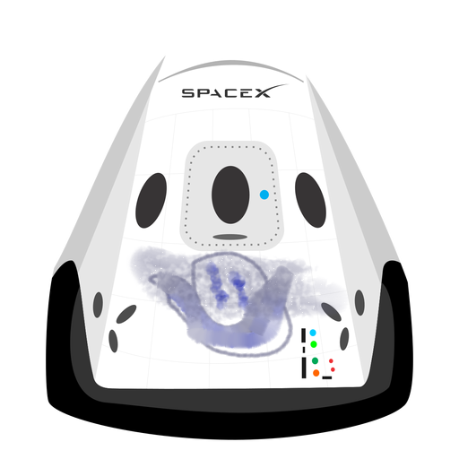

Hyperblog
Tu blog de cabecera
Sera el cambio mas importante. Este es el título atractivo e interesante del post
y este es el párrafo de inicio donde vamos a explicar las cosas increíbles que se pueden hacer con ramas

Los blogs son la mejor forma de compartir información y tus ideas. Mucho mas que ir a conferencias o a salir en youtube. Excepto si eres un rockstar. Pero estadísticamente no lo eres..... por ahora.
Suscribete y dale like y un me gusta.... Gracias
=======
Hubo mucho codigo que se perdio en los intentos que quisimos hacer git pull y git push
pero no hemos muerto en el intento, nos costo alli estamos.
Primera idea principal a desarrollar en el escrito.
Los ejecricios parecen complicados sin embargo, si le dedicas mas tiempo de lo esperado seguro que estaras obteniendo mas facilidad y mayor velocidad en la escirtura y el razonamiento logico ira gradualmente entendiendo la sintaxis de la programacion, Ahora es es importante tambien que elijas que lenguaje de programacion vas a aprender, definitivamente todas cumplen un algoritmo pero su sintaxis varian de uno a otro.
Los blogs son la mejor forma de compartir informacion y tus ideas, mucho mas que ir a conferencias o salir en youtube. Excepto si eres un rockstar. Pero estadisticamente no lo eres.... por ahora.
Suscribete y dale like